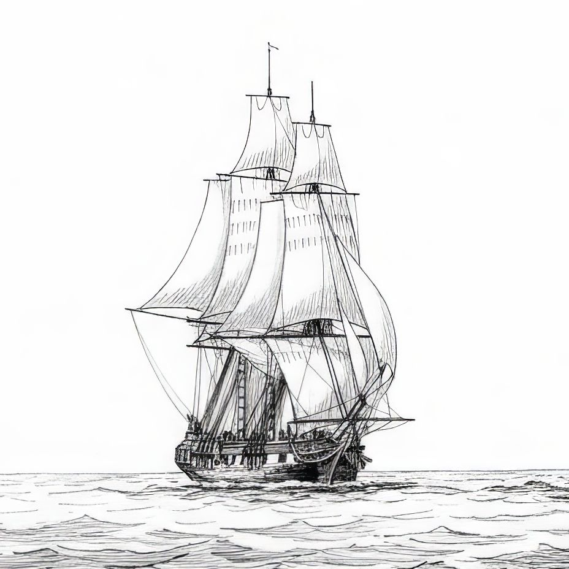
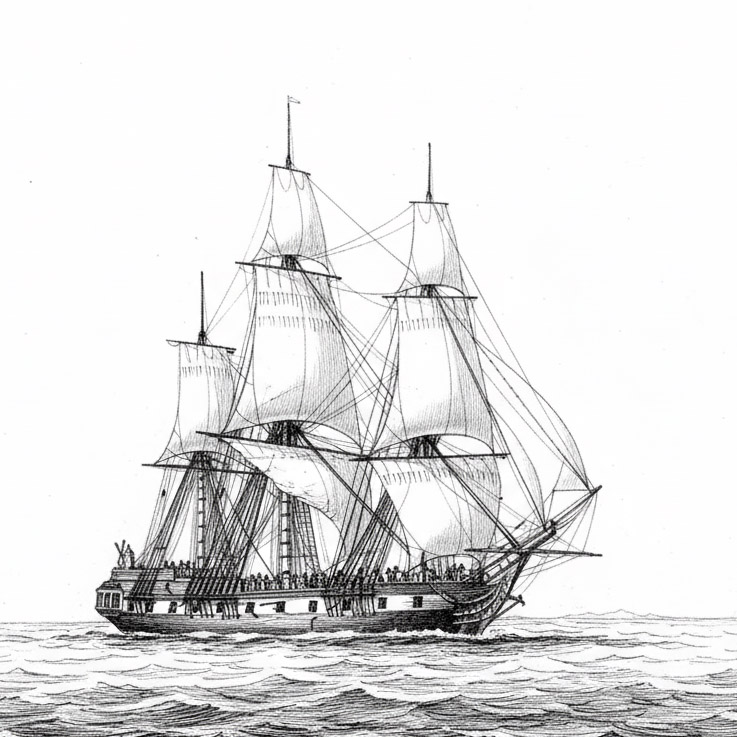

Ships 
Ships of the d'Entrecasteaux and Baudin expeditions

d'Entrecasteaux expedition: Marsouin-class gabare of the French Royal Navy

d'Entrecasteaux expedition: Rhône-class gabare of the French Royal Navy
Les navires
Les navires des expéditions d’Entrecasteaux et de Baudin

Expédition Baudin :
petite goélette acquise à Port Jackson (Sydney) en 1802